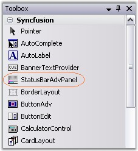
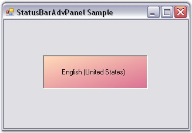

To create a StatusBarAdvPanel control through designer,
· Drag-and-drop a StatusBarAdvPanel control from the toolbox onto the form.

Figure 1019: StatusBarAdvPanel in Toolbox
· Set the desired background in the properties window.
· Set the PanelType property for the control.
· You can set the StatusBarAdvPanel to have a custom border color by setting the value of the BorderColor property.
· Build and run the application.

Figure 1020: StatusBarAdvPanel with PanelType set to "CurrentCulture"
See Also